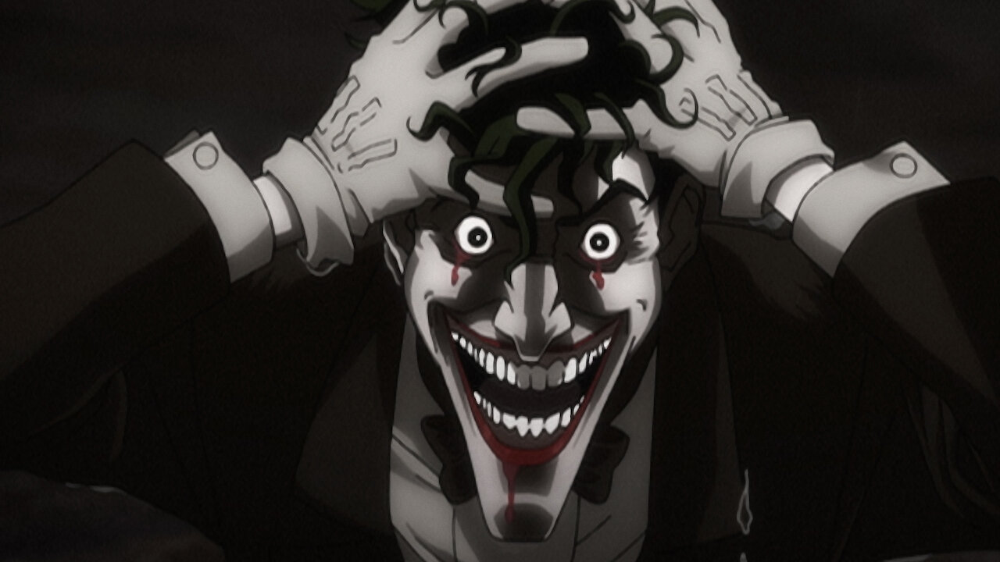

VERY BAD! TRY AGAIN.
While there may have been a multitude of representations of The Riddler, Edward Nygma's exploration into madness in the TV series, Gotham has got to be one of the best. Many fans were able to witness how he got to that stage and some even preferred him to some good guys like Jim Gordon. After all, with this kind of riddle, it's hard to not admire his mind and desire for puzzles and riddles. Especially when they are fueled by his love for the unavailable Kristen Kringle. It's a sad riddle but one that opens up the truth about how Nygma feels.
Try again!